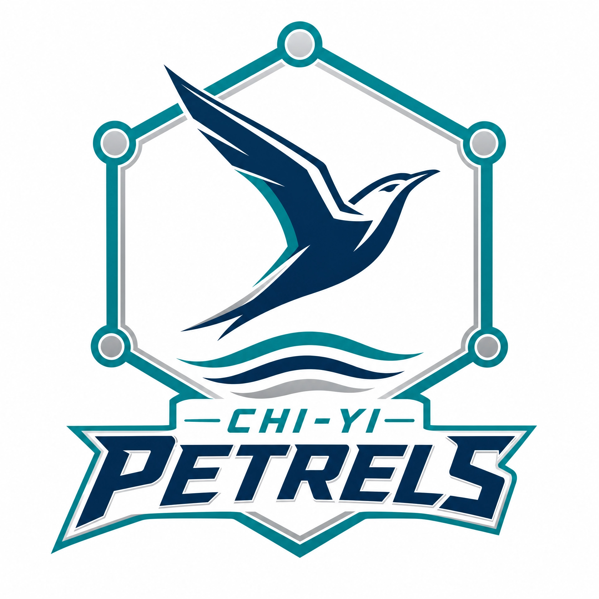
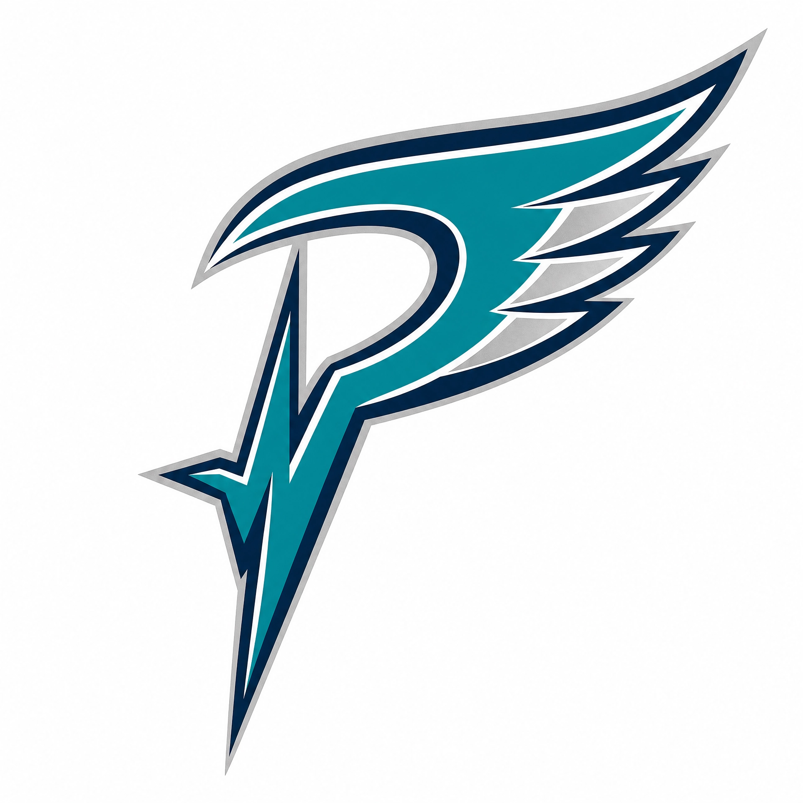
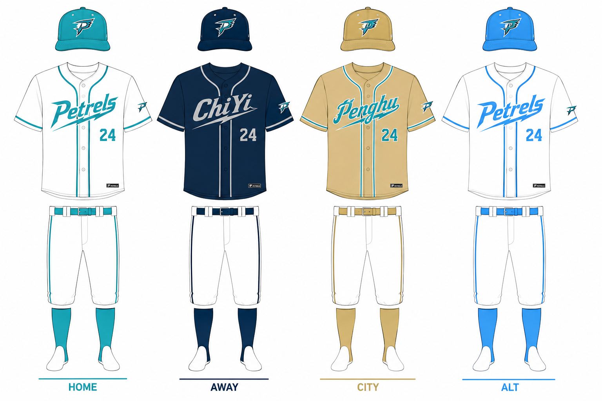
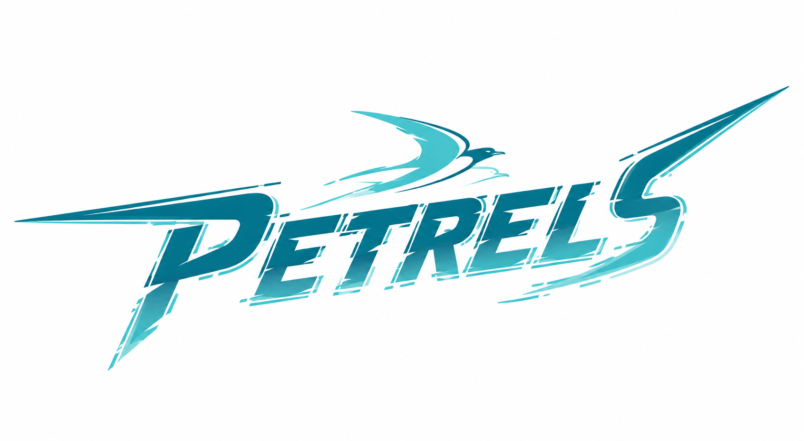

奇醫海燕（英文：QIYI Petrel）是一支台灣的職業棒球隊伍，所屬聯盟為室內棒球聯盟。 該隊的所屬城市為澎湖縣，主場則是位於澎湖縣的海燕球場，二軍農場基地以及比賽主場則是位於雲林縣北港棒球運動園區。 該隊創立於2045年，前身為澎湖、金門、馬祖共同組成的離島聯隊，目前球隊營運、經營則是由奇雋運動集團旗下子公司奇雋醫療科技股份有限公司負責。
球隊歷史
奇醫海燕隊的前身為「離島聯隊」。該隊成立於2020年代進入全面商業化浪潮之際，為聯盟中少數由地方政府與在地企業共同支撐的球隊。當時球隊的營運資金主要來自金門酒廠盈餘提撥、金門在地刀具業者聯名贊助，以及澎湖與馬祖的觀光發展基金。在成立初期，球隊藉由這筆資金在離島地區建立青訓系統，並培養出多名具備離島血統的本土球員。憑藉對離島特殊氣候與強風環境的熟悉度，球隊在主場賽事中具備一定的地理優勢。
然而進入2030年代後，隨著職棒環境引入數據科學與球員薪資大幅提升，缺乏大型跨國財團資金挹注的離島聯隊在自由市場上失去競爭力，導致核心球員陸續流失。由於球隊缺乏資金更新先進的數據分析與訓練設備，基層養成與一軍戰績逐漸下滑。2042年賽季，球隊創下單季僅獲35勝的低谷紀錄，長期贊助的金門酒廠遂發出通牒，表示若戰績未能脫離墊底將全面撤資。2043年7月，球團總經理向聯盟發表公開信，坦言球隊因連年虧損已達經營臨界點，隨後棒球界傳出球隊即將解散或與本島球隊合併的傳聞。
2045年4月，經營精準醫療與運動科技的「奇雋運動集團」與離島聯隊高層展開轉賣談判。奇雋集團承諾接手後將永久保留澎湖、金門、馬祖的主場地位，並宣布由旗下子公司「奇雋醫療科技」負責球隊實際營運。
同年11月4日，奇雋集團於台北圓山飯店舉行記者會，董事長林奇雋與執行長蘇以文親自出席，正式宣布新隊名為「奇醫海燕隊」。首任總教練由曾帶領國家隊奪冠、具備多年國際賽執教經驗的陸廷威出任。
2046年至2049年間，奇雋醫療科技對球隊進行了大規模的硬體與後勤改革。球團首先於澎湖縣興建全新的「海燕球場」，該球場在草皮與地板下方埋設了數萬個感測器，用以即時監測球員跑動與投打時的關節、骨骼壓力。此外，球員宿舍亦全面配置微重力神經修復艙，並為一、二軍球員編制專屬的運動醫學、營養與數據分析團隊，每日監控肌肉疲勞度與各項生理指標，以此降低球員傷兵率，並加速年輕選手的養成。
2050年球季前，首任總教練陸廷威因身體健康因素決定辭去總教練一職，球團隨後接受其推薦，由曾於國家隊長期合作、具備美國職棒小聯盟執教經驗的首席教練陳昭遠接掌兵符，陸廷威則轉任球團高級顧問，持續協助青訓體系的培育工作。
陳昭遠雖然被球迷批評常揠苗助長、還沒養成熟的年輕球員就急著拉上一軍，但同時其大膽啟用新人的作風，也成功讓多位潛力新秀在短時間內累積一軍實戰經驗，並在醫療團隊的嚴密保護下迅速適應職棒強度，為球隊注入了關鍵的活力與板凳深度。
在教練團人事交替與新人換血的震盪期中，奇醫海燕隊在2050年與2051年賽季仍展現出穩定的團隊戰力。雖然這兩個賽季皆在例行賽尾聲以些微勝差未能晉級季後賽，但整體的球員結構、戰術執行力與醫療後勤體系，已較離島聯隊時期有顯著提升，持續維持在爭冠的競爭行列中。
標誌、制服和顏色
球隊徽章設計
2045年11月，隨著奇雋醫療科技正式接手經營，球隊發布了現行的主隊徽，徹底取代了離島聯隊時期的傳統島嶼剪影設計。這款隊徽的核心特徵在於其六角形分子結構外框，象徵著奇雋醫療在生物科技與運動醫學領域的專業底蘊。
隊徽中央展示了一隻呈 45 度角向上攀升的幾何海燕剪影，其銳利的羽翼線條與球隊商標文字（Petrels）的切角完全統一，展現出極致的空氣動力學美感。海燕下方設有三道動態的深藍色波浪線條，分別代表球隊的發源地：澎湖、金門與馬祖，象徵這支科技軍團依然保有強韌的離島血統。配色上採用了「手術室藍」與「深海藍」的梯度組合，並以「科技銀」勾勒邊框，使其在球衣胸前呈現出一種冷靜、精密且具備醫療權威感的視覺效果。

球隊帽徽設計
與主隊徽的嚴謹結構不同，奇醫海燕的帽徽追求極致的簡約與瞬間辨識度。其標誌為一個經過高度設計的英文字母「P」。該設計最顯著的特徵在於字母的垂直支柱部分被轉化為一條心電圖脈衝線，象徵著運動員在極限競技狀態下的強大生命力，以及球隊核心的生理監控技術。

球隊制服設計
奇醫海燕隊於2051年球季前發表全面改版的新世代球衣，此系列設計打破了過往職棒球衣傳統的沉重感，整體視覺轉向俐落且具科技感的清新插畫風格。新版球衣共分為四個版本，將母企業「奇雋醫療」的科技意象與前身「離島聯隊」的大海血統進行視覺融合。
主場球衣以大面積的純白為底色，胸前主視覺為湖水綠的「Petrels」（海燕）斜體字樣，球衣中央與袖口飾有細緻的湖水綠滾邊線條，並搭配同色系的球帽、腰帶與球襪。其白色象徵母企業奇雋醫療科技的醫學潔淨感與專業防護，湖水綠則代表圍繞離島的清澈海域，兩者結合傳達出球隊醫學先行的專業形象。客場球衣採用沉穩的深海藍作為球衣主色，胸前字樣轉為母企業的羅馬拼音縮寫「ChiYi」，字體與背號皆採用具備金屬光澤的鈦金銀色，並帶有閃電般的俐落切角設計。深海藍象徵離島周邊波濤洶湧的深邃大海與極端環境，呼應球員強韌的體魄，鈦金銀則注入了強烈的未來科技感與電子醫療器材的精準意象。
城市特別版球衣為向主場基地致敬的特殊款式，球衣主體採用獨特的沙灘金色，胸前字樣改為代表主場基地的「Penghu」（澎湖），字體與滾邊則使用海波綠相互襯托，搭配金色的球帽與球襪。此設計的金色取材自澎湖著名的黃金沙灘與陽光，海波綠則是夏日的海浪顏色，強調球隊與地方情感的深度連結，也是對前身離島聯隊血統的傳承。假日與替代球衣則回歸傳統的白色基底，但胸前字樣、線條、球帽及球襪全面改用明亮、清新的天青藍，視覺上較主場球衣更為輕盈與年輕化。天青藍象徵風暴過後放晴的離島天空，字體呈現如海燕滑翔般的動感線條，展現球團近年大膽啟用新人、積極換血後的朝氣與活力。
在視覺細節與科技意象方面，新版球衣在細節上做了大量簡化，捨棄了過往繁複的裝飾，改用俐落的幾何線條。全系列球帽與左袖上皆繡有全新的「P」字型海燕隊徽，該隊徽將英文字母 P 與展翅翱翔的海燕線條進行幾何抽象化，字尾帶有銳利的切角，呼應精準醫療與數據棒球的精準理念。

球隊商標文字設計
2045年11月，隨著奇雋醫療科技正式接手球隊經營權，球隊發布了現行的「破空海燕」商標文字，取代了離島聯隊時期較為傳統的方塊字體。這款設計的核心在於展現「精準醫療」與「極致速度」的融合，字體採用了大幅度向右傾斜的重裝斜體，象徵海燕在強風中俯衝的動態瞬間。
在文字細節上，字母的邊緣處理借鑑了手術刀的銳利切角，特別是在首字母「P」與末字母「s」的延伸線條中，展現出極高的物理精確度。字體內部嵌入了水平的數位干擾紋路與速度線。配色方案採用了從底部的「深海藍」向上漸變至頂部的「手術室藍」，強調其現代的醫療科技背景。文字上方盤旋著一隻極簡化的海燕剪影，其翅膀的傾斜角度與字體完全平行，營造出一種數據對齊的嚴謹美感。

歷任總教練
| 任次 | 教練名 | 背號 | 接任年份 | 卸任年份 | 台灣大賽冠軍 | 備註 |
|---|---|---|---|---|---|---|
| 1 | 陸廷威 | 65 | 2046 | 2049/04 | 因身體健康狀況辭職 | |
| 2 | 林家佑 | 41 | 2049/04 | 2049/10 | 代理 | |
| 3 | 陳昭遠 | 78 | 2050 | - | 現任 |
球隊歷年成績
2040年代奇醫海燕球隊戰績
2050年代奇醫海燕球隊戰績
| 年度 | 出賽 | 勝-敗-和 | 勝率 | 分區排名 | 聯盟排名 | 季後賽 | 最終賽果 |
|---|---|---|---|---|---|---|---|
| 2051 | 150 | 85-65-0 | .567 | 2 | 9 |
| 年度 | 隊數 | 報名人數 | 中選人數 | 狀元籤 | 狀元 | 球員類型 | 備註 |
|---|---|---|---|---|---|---|---|
| 2052 | 20 | 486 | 奇醫海燕隊 |